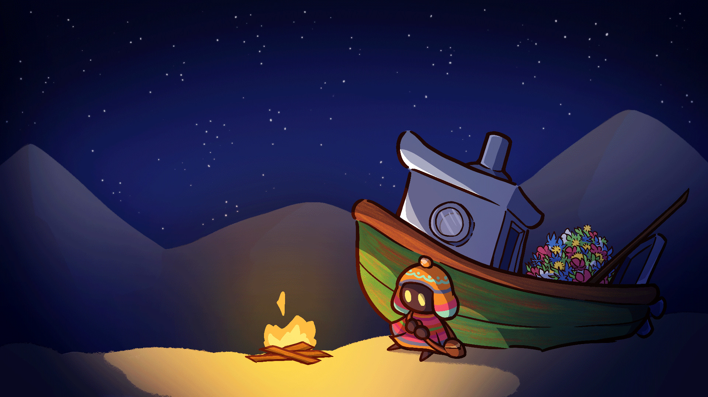

Sky Flowers - Desglose del Proyecto
Sky Flowers es un juego de plataformas combinando 2D y 3D que explora la avaricia del jugador. Inspirado en el desierto florido de Atacama, localizado en el norte de Chile.
Resumen
Sky Flowers es un juego de género plataformero enfocado en exploración y en explotar mecánicamente la avaricia del jugador. El jugador debe escalar un gigante de piedra recogiendo flores con su red volviendo el personaje cada vez más pesado mientras más flores recoge.
Este juego fue hecho como parte de la Latin American Game Jam, bajo la temática de “El que mucho abarca, poco aprieta”.
Equipo
El equipo estaba compuesto por 5 integrantes, 2 personas trabajando en arte 2D, 1 programador, 1 persona en audio y yo que trabajé en el diseño mecánico, diseño de nivel y en la implementación de assets.
Mi Rol
Como diseñador dentro de un proyecto que debía desarrollarse en 9 días, liderar el proceso de brainstorming fue esencial para poder lograr una idea de juego solida en la menor cantidad de tiempo posible, introduje la idea de Pilares de Diseño a un equipo que nunca había utilizado la herramienta, lo que llevó a que tuviéramos una idea del juego completo en menos de 12 horas.
Luego de un trabajo inicial, mis tareas pasaron a ser de diseñador de nivel, encargándome de la creación e ideación de los niveles por los que el jugador iba a navegar, al mismo tiempo de implementar los assets que el equipo de artistas completaba.
Objetivo del Proyecto
- Objetivo de Experiencia: Crear una sensación de descubrimiento relajado con fuerte identidad visual.
- Objetivo de Diseño: Integrar exploración, puzles suaves y narrativa no lineal.
- Objetivo de Producción: Construir un vertical slice inicial para pruebas de jugabilidad.
Diseño
- Sistemas Núcleo: Exploración aérea, recolección de semillas y restauración de zonas.
- Progresión: Desbloqueo de rutas y herramientas según hitos de restauración.
- Narrativa: Historia contada a través de escenarios, objetos y diálogos cortos.
- Dirección Visual: Paleta suave, contrastes luminosos y siluetas orgánicas.
- Prototipado: Iteraciones rápidas para validar ritmo de juego y claridad de objetivos.
